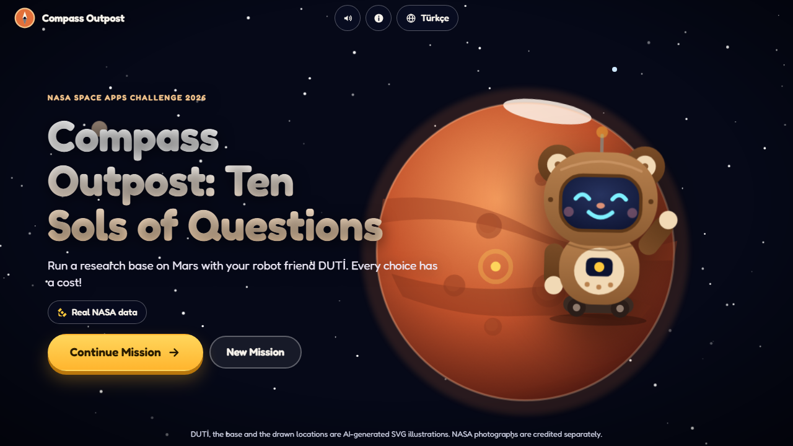
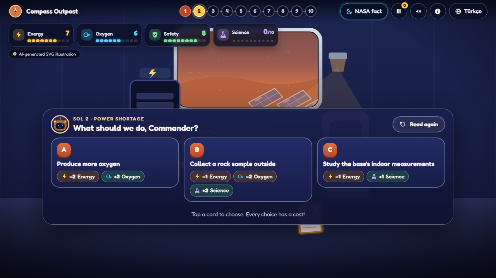
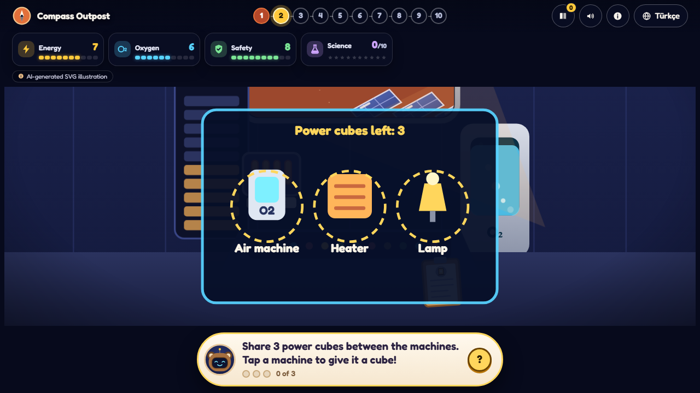
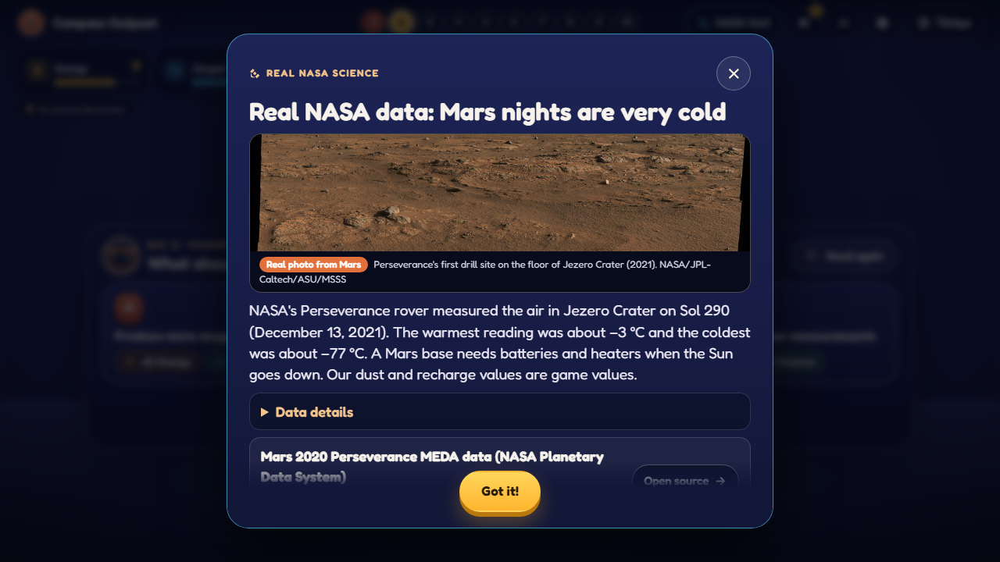
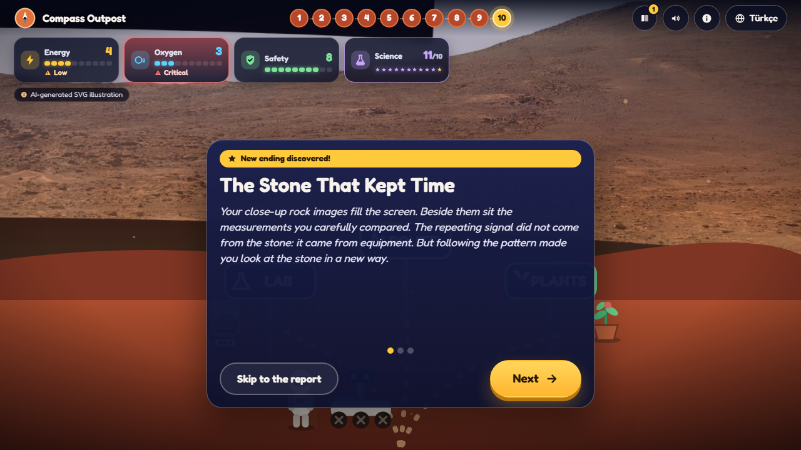
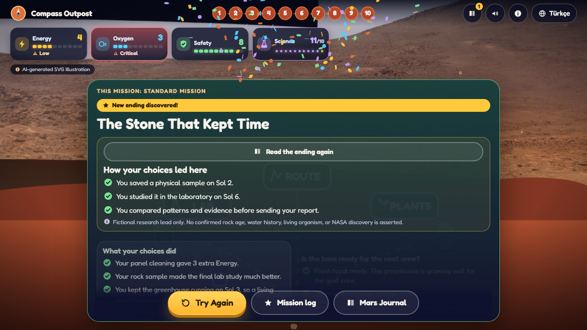

NASA SPACE APPS CHALLENGE 2026 · PROJECT DEMO
A Mars outpost decision game that teaches real mission trade-offs to young learners
| Team | Astral_Bears22 |
| Local Event | Universal Event, Anywhere in the World |
| Challenge | Build a Junior Astronaut Mission Trainer |
| Project | https://github.com/yugennnx/Astral_Bears22_Nasa_Game |
Slide text prepared with AI assistance (Anthropic Claude). No NASA logo or insignia is used. Game illustrations are AI-generated SVG drawings and carry a visible label in the game.
Space content for children is often either too abstract (posters and general facts) or too technical. Few tools let a young learner feel the trade-offs that decide whether a mission succeeds: power, life support, radiation protection, food and communication delay.
Build an interactive game or app in which children aged 7 to 12 manage a lunar or Martian outpost, make real decisions and see how those choices play out, grounded in real NASA open data.
Compass Outpost is a browser game in which the player is the Commander of a small Mars research outpost for ten sols, guided by a robot companion named DUTİ. Every sol brings one decision between three plans, and every plan has a cost.
Design goal: a child should leave the game understanding a real constraint of deep-space survival, not only having played a fun game.
The game runs in any modern browser with no download and no account, on computers and phones.



Perseverance MEDA calibrated air-temperature readings from Jezero Crater, Sol 290 (December 13, 2021): about −3 °C to −77 °C. They drive the night-power decision and a temperature comparison task.
The NASA DONKI record 2024-05-20T05:36:00-CME-001 and NASA's report on the May 2024 solar storm observed at Mars (about 8,100 micrograys for an astronaut beside Curiosity) support the radiation-protection decision.
MOXIE oxygen production, Perseverance sample tubes, Veggie plant growth, Mars facts and Earth–Mars signal delay, plus three NASA photographs (PIA19400, PIA24765 and PIA26373).
All NASA data is archived and embedded, labelled “archival data, not live,” and every source is linked inside the game. Resource points, forecasts and fictional events are game values and are labelled as such. The visitor ending is marked as science fiction.

Children experience why mission planners must balance power, life support and protection. They learn from failure without punishment: a stopped mission explains what went wrong and invites a new strategy.
Plain language with in-context explanations of terms such as “sol”; mouse, touch and keyboard controls; reduced-motion support; an English interface with an optional Turkish translation.
HTML, CSS and JavaScript modules with no build step; SVG illustrations drawn in code; synthesized Web Audio sound; Anime.js, canvas-confetti and the Fredoka typeface.
The rules engine is compared path by path with an independent reference model for all three mission profiles. Automated browser tests cover controls, layouts, language switching and saving. The source code is public under the Apache-2.0 license.


The team selected the underlying game idea. OpenAI ChatGPT/Codex and Anthropic Claude assisted with story details, code, Turkish translation, code-drawn SVG illustrations, source audits and documentation. Google Antigravity assisted with playtesting reviews. AI-generated illustrations carry a visible “AI-generated SVG illustration” label in the game. The full scope and metadata are in AI_USAGE.md and ai-usage.json in the repository.
The game has not yet been playtested with children of the target age, so no measured learning outcome is claimed. NASA data is archived, not live.
Community Coordinated Modeling Center, NASA Goddard Space Flight Center. (2024). DONKI CME Record 2024-05-20T05:36:00-CME-001. Space Weather Database Of Notifications, Knowledge, Information. https://ccmc.gsfc.nasa.gov/DONKI/view/CME/31034/-1
Community Coordinated Modeling Center, NASA Goddard Space Flight Center. (n.d.). DONKI: Space Weather Database Of Notifications, Knowledge, Information. https://ccmc.gsfc.nasa.gov/tools/DONKI/
Rodriguez-Manfredi, J. A., et al. (2021). The Mars Environmental Dynamics Analyzer, MEDA [Data set]. NASA Planetary Data System. https://doi.org/10.17189/1522849
NASA Planetary Data System Atmospheres Node. (n.d.). Mars 2020 Perseverance MEDA Data Archive. https://pds-atmospheres.nmsu.edu/data_and_services/atmospheres_data/PERSEVERANCE/meda.html
NASA. (2024). NASA Watches Mars Light Up During Epic Solar Storm. https://www.nasa.gov/missions/mars-science-laboratory/curiosity-rover/nasa-watches-mars-light-up-during-epic-solar-storm/
NASA. (2023, September 6). NASA's Oxygen-Generating Experiment MOXIE Completes Mars Mission. https://www.nasa.gov/missions/mars-2020-perseverance/perseverance-rover/nasas-oxygen-generating-experiment-moxie-completes-mars-mission/
NASA Science. (n.d.). Mars: Facts. https://science.nasa.gov/mars/facts/
NASA Science. (n.d.). Mars Rock Samples. Mars 2020 Perseverance. https://science.nasa.gov/mission/mars-2020-perseverance/mars-rock-samples/
NASA. (n.d.). Growing Plants in Space. https://www.nasa.gov/exploration-research-and-technology/growing-plants-in-space/
NASA Science. (n.d.). Speaking Percy's Language: How to Talk so Perseverance Will Listen. https://science.nasa.gov/blog/speaking-percys-language-how-to-talk-so-perseverance-will-listen/
NASA/JPL-Caltech/MSSS/Texas A&M Univ. (2015). Sunset in Mars' Gale Crater (PIA19400) [Image]. https://images.nasa.gov/details/PIA19400
NASA/JPL-Caltech/ASU/MSSS. (2024). Perseverance Rover's View Up Crater (PIA26373) [Image]. https://images.nasa.gov/details/PIA26373
NASA/JPL-Caltech/ASU/MSSS. (2021). Perseverance's Office on Mars (PIA24765) [Image]. https://images.nasa.gov/details/PIA24765
NASA Space Apps Challenge. (2026). Build a Junior Astronaut Mission Trainer. https://www.spaceappschallenge.org/2026/challenges/junior-astronaut-mission-trainer/
Third-Party Software: Anime.js 4.5.0 (MIT); canvas-confetti 1.9.4 (ISC); Fredoka typeface (SIL OFL 1.1). AI Tools: OpenAI ChatGPT/Codex, Anthropic Claude, Google Antigravity.